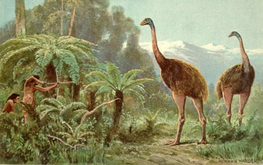
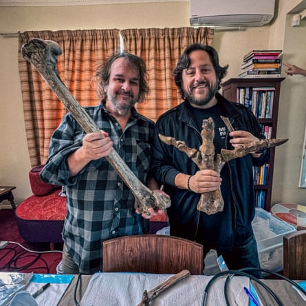
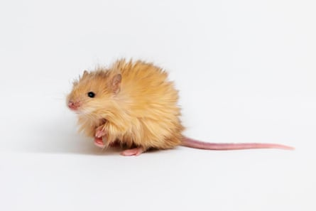
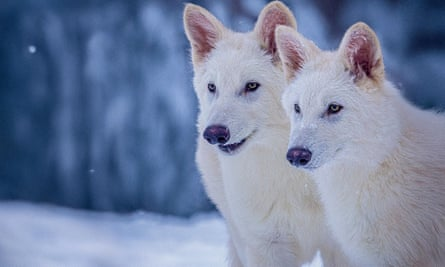
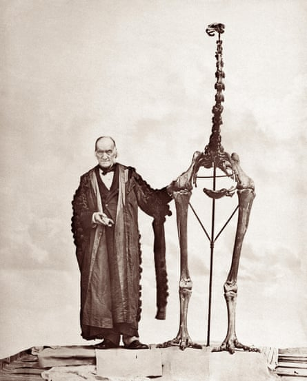

S tanding more than three metres (10ft) high, the giant moa is the tallest bird known to have walked on Earth. For thousands of years, the wingless herbivore patrolled New Zealand , feasting on trees and shrubs, until the arrival of humans. Today, records of the enormous animal survive only in Māori oral histories, as well as thousands of discoveries of bone, mummified flesh and the odd feather.
But this week, the US start-up Colossal Biosciences has announced that the giant moa has joined the woolly mammoth, dodo and thylacine, or Tasmanian tiger, on its list of animals that it is trying to bring back from the dead. The announcement has provoked public excitement – and deep scepticism from many experts about whether it is possible to resurrect the bird, which disappeared a century after the arrival of early Polynesian settlers in New Zealand about 600 years ago.
A moa as imagined by the German artist Heinrich Harder, best known for his depictions of extinct animals, thoughthe Māori did not use bows and arrows.Photograph: Alamy
The Texas company says it is aiming to resurrect the extinct bird within five to 10 years, in partnership with the Ngāi Tahu Research Centre at New Zealand’s University of Canterbury.
Reportedly backed by US$15m (£11m) of funding from the Lord of the Rings film-maker Sir Peter Jackson , who is an investor in Colossal Biosciences and an avid moa bone collector, the project will try to “de-extinct” the giant bird by harvesting DNA from fossils, then editing genes of its nearest surviving relatives, such as the emu. The genetically modified birds will be hatched out and released into enclosed “rewilding sites”, the company says.
Peter Jackson (left), holding a moa’s bone, with Colossal’s founder, Ben Lamm.Photograph: Courtesy of Colossal Biosciences
“The hope that within a few years, we’ll get to see a moa back again – that gives me more enjoyment and satisfaction that any film ever has,” says Jackson .
As part of Colossal’s announcement , the Māori archaeologist Kyle Davis says: “Our earliest ancestors in this place lived alongside moa and our records, both archaeological and oral, contain knowledge about these birds and their environs. We relish the prospect of bringing that into dialogue with Colossal’s cutting-edge science as part of a bold vision for ecological restoration.”
This is the latest in a string of headline-grabbing claims by Colossal, which raised $200m in January on a $10bn valuation of the company. In April, Colossal claimed it had resurrected the dire wolf, a North American predator which has been extinct for about 13,000 years, with the birth of two grey wolves that had been genetically modified to have dire wolf characteristics. Weeks earlier, the company released photos of “ woolly mice ”, which had been genetically altered to have woolly mammoth traits as part of efforts to “de-extinct” the giant herbivore by genetically modifying Asian elephants. The firm has also set its sights on bringing back the dodo, the Mauritian bird that was hunted to extinction by sailors in the 17th century.
But Colossal’s announcements are attracting growing scorn and concern from many researchers, who argue that claims of “de-extinction” are false and a distraction from the ongoing rampant loss of biodiversity, with a million existing species at risk of disappearing. There are also concerns that these “resurrected” hybrid species are designed for habitats and ecological niches that may no longer exist. Research published in the journal Nature Ecology and Evolution concluded that spending the limited resources available for saving nature on de-extinction could lead to net biodiversity loss.
Colossal’s ‘woolly mice’ have been genetically altered to have woolly mammoth traits.Photograph: undefined/AP
Aroha Te Pareake Mead, a member of the International Union for Conservation of Nature Policy Development Working Group on the use of Synthetic Biology in Conservation, says: “De-extinction is a misnomer, a false promise, that is rooted more in ego than a genuine effort to conserve species. These are exercises in the egotistical delight in the theatrical production of ‘discovery’ devoid of ethical, environmental and cultural considerations. Bring the moa back? To where? To what quality of life? To roam freely?”
Dr Tori Herridge, an evolutionary biologist at the University of Sheffield, who turned down an offer of joining Colossal Biosciences’ advisory board, says the company’s initiatives are best thought of as scientific experiments – rather than genuinely bringing back extinct species from thousands of years ago.
“Is de-extinction possible? No, it is not possible. What you could potentially do – we’ll see – is create a genetically modified organism that may contain some appearance traits that are linked to a previously extinct species based on what we think they were like. Using the term “de-extinction” allows us to skip over the hard questions. This is not bringing back the mammoth or the moa or the dodo, this is creating something new to create a change in an ecosystem,” she says.
Herridge questions the deterministic view of genetics – highlighting that learned culture is a crucial part of a wild species.
“I don’t think you’re going to be able to create a something that is behaviourally a woolly mammoth just based on its genome. A lot of elephant behaviour is learned. We know there are problems with elephant behaviour once you remove a matriarch from a group,” she says.
Colossal’s genetically modified ‘dire wolves’ Romulus and Remus at five months old.Photograph: Colossal Biosciences/AFP/Getty Images
Colossal Biosciences says its work is helping to slow the rampant ongoing loss of biodiversity by returning functions lost to ecosystems when animals such as mammoth, moa and dodo go extinct. They point to excitement about how its techniques could help restore genetic diversity in endangered wildlife, helping species such as the American red wolf to avoid an extinction doom loop. A representative for the company said they strongly reject claims that de-extinction is not possible.
Sir Richard Owen, an English biologist, comparative anatomist and paleontologist, with a giant moa skeleton, c1879.Photograph: Alpha Historica/Alamy
Prof Andrew Pask, who is working on the moa project for Colossal, says the critics are wrong.
“For many of our living species on the brink of extinction, the damage has been done. They are in an extinction vortex where the population spirals to extinction. The single, only way out of this is by bringing back lost diversity into those species genome. This is what de-extinction technology can do,” he says.
“To say it is not possible is just not true. It is hard. It is complex. But we have all the tools to do it. If we re-engineer a genome that is 99.9% identical to a thylacine, a moa, a mammoth then that animal would be as similar to a moa and any two moas would be in that population.”
But moa expert Nic Rawlence, an associate professor in ancient DNA at the University of Otago, says there is little chance of bringing the giant birds back from the dead.
“This is Jurassic Park with very low chance of success,” he says.
“If we think of the dire wolf, the genome is 2.5bn individual letters long. It’s 99% identical to the grey wolf, so that’s still significantly over a million differences, and they made only 20 changes to 14 genes. So, to say they’ve created a dire wolf is farcical. They’ve created a designer grey wolf. And that’ll be the same with whatever they do with the moa.”
- Find more Age of extinction coverage here , and follow the biodiversity reporters Phoebe Weston and Patrick Greenfield in the Guardian app for more nature coverage